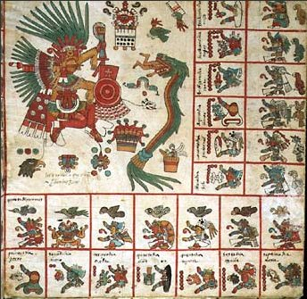
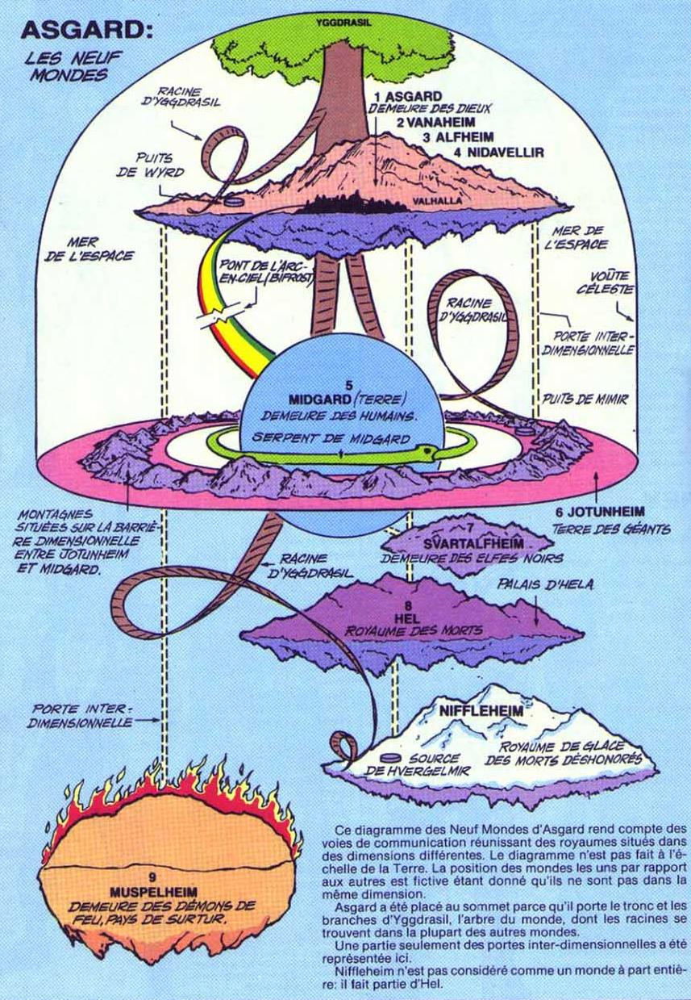
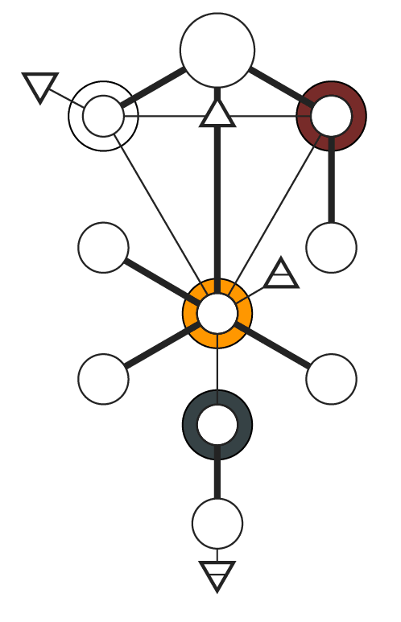
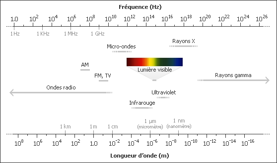

FALLEN ANGEL ou NEPHILIM הנּפלים / הֱנּוֹפּלים
נופל : veut dire décédé, victime de guerre, tomber, الجَبَابِرَةَ [al-gebabireh] en Orbi...
Παραϛρατημένη / Para-stratè-ménè
LES ANGES DÉCHUS, EXPULSER DE L'HAUT DELA, ET DÉCÉDÉ N'EXISTE POINT PUISQUE CELON L'ISLAM LES MELA'IKHIMS ( الْمَلَائِكَيم, מלאך [aːl-malaːjːikat ; aːl-mɛlaːjːikɛh, ɛːl-mɛlɛːjːikɛh]) ONT ÉTÉ CRÉÉ PARFAIT ET SONT PRATIQUEMENT ÉTERNEL...
ELLES NE SONT POINT LIBRE PUISQU'ELLES NE PEUVENT REFUSER LES INJONCTIONS SPIRITUEL ET MENTAL D'AL-ILAH (CREATEUR CELESTE), ETANT LIÉ A LUI, PUISQU'ÉTANT SA SÈKINÈH سَكِينَة"SA DIVINE PRESENCE", LES NOMINATIONS DE CES "MELA'IKHIMS" SONT DES PERSONNIFICATIONS DE CES ATTRIBUTS QUE LES HUMAINS ONT ENSUITE IMAGEES (EN STATUE PUIS EN ICONES)... DES LORS ETANT PUR, HONNETE ET DROIT, SPIRITUEL, ILS NE PEUVENT DONC POINT CHUTER, PUISQU'ILS S'AGIT D'AL-ILAH et qu'il est Omniprésent...
En cela les Hoummes et les Genies / Anges sont avantagé, car meme si leurs destins est connus d'avance d'Al-Ilah puisque le Temps n'existe point pour lui, étant le debut Α et la fin Ω, et dont l'existance et autres que la notre... Il leurs a accordé la liberté de choisir, en leurs pourvoyant une conscience ce dont les Mèla'jikèh sont depourvus, puisque totalement soumis aux injonctions spirituel/mental d'Al-Ilah, c'est cela le grand cadeau donné aux hoummes.
DES LORS SI ILS Y A UNE CHUTE SUR TERRE ( أَرَّضَ ; ארץ [ɛːrrəʤ, ɛːrrɛʤa, ɛrtz]) D'ENTITE SPATIAL (tels que decris dans le Livre d'Enoch ou dans l'ancien testament), CELA NE PEUT ETRE QUE DES גאון GENIE جَنِ -> GANI جان -> ANGI -> ANGE انج...
TELS QU'EBLIS QUI FUT UN DƷIN جِنّْ CHASSÉ DU GANAH جَنَّة (ciel, heaven), AYANT REFUSER D'AIMER LA NOUVELLE CREATION DANS L'A.D.e.N الإله D'AL-ILAH, SUR TERRE, L'HOUMME حوم, אדם en hebreux...
ETANT CONTRAINT DE VIVRE AVEC CEUX QU'ILS DETESTENT, UN CHATIMENT PERMANENT, AINSI A CAUSE DES CETTE RAGE DES GENIES S'ATTACHENT PARFOIS AUX HOUMMES, CE QUE LES MUSULIMS APPEL UN قرين QARĪN [contre-partis] (en albanais un "ORA" mot étant hypothetiquement derivé de l'arbi ورع), QUI PEUT ÊTRE MUSULMANES, IMPIE, OU DIABOLIQUE, PARFOIS, SI LA PERSONNE Y CONSENT OU PAR CONTRAINTE / ETREINTE OU CONTACT PHYSIQUE, AUDITIF & VOCAL, DE NOMBREUSE QARIN CE JOIGNE AU PREMIER, ET QU'ILS LES POUSSENT DANS DES ACTES NEGATIVES OU POSITIVES, CHOSE QUE LES ERUDITS MODERNES APPELES L'INCONSCIENT OU LE SUBCONSCIENT, ET QUE LES EXEGETES MUSULIMS APPELLENT LA POSSESSION OU L'INFLUENCE SPIRITUEL...
Remarque :
| Le possédé est appellé mamelouk |
مَمْلُوك |
| Le tourmenter, l'effrayé est appellé machût |
مٰشُط |
| L'habiter est appellé maskûn |
مسكون |
| L'endosser est appellé malbûs |
ملبوس |
| Le touché est appellé malqyûs ou malmûs |
مٰلقيوس
ملموس |
| Le giflé est appellé matrûch |
متروش
مطروش |
| Le frapper est appellé madrûb |
مٰدرُوب
مٰضرُوب, |
| L'enlevé est appellé "maktûf" |
مكطوف
مكتوف |
En resulte des dégat variable allant du mashour [ensorcelé], touwkal, tquaf [nuire à la sexualité], tajria [provoqué des hemorogie chez la femme] ,tamrid [rendre malade], ta'arida [entraver la reussite], targim [jeter des pierres pour quitter les lieux], marbût ou matqûf [entrave], tahbil, au tahmiq [folie provoqué])...
Lala Mira, une djinnah, agit le lundi, jour de la lune, apportant tremblements, pâleur, maladie mentale. Ainsi s'associent des jours, des astres, des symptômes, des organes, des présages, des plantes, des couleurs et l'agissement de tel ou tel produit chimique (canabis, thé, café, drogue), et pour les incultes les djinns. El Ahmar par exemple est le djinn du mardi, il est associé à Mars, au sang, aux plantes rouges (grenadier- rruman, fenugrec - hlba).
Le فقيه fqih (savant - juriste - thérapeute ..) dispose ainsi de connaissances, de formules pratiques (souvent sous forme d'un livre, dmiati), de grilles d'interprétation etc. lui permettant d'identifier l'agresseur et de traiter spécifiquement les malheurs dont il est la cause. Au quotidien ce mode d'entrée est peut-être le plus fréquent, certainement en partie parce que la plupart des fiqaha ne possèdent pas le génie de leur art.
Au-delà de ces questionnements possibles, les esprits (جإن ʤɛns) nous ressemblent étrangement (ils sont d'apparence humaines, vegetales, minerales, energitiques ou animales ayant des capacités télépathiques, ou kinésique, ou magique, ou médiumnique plus importante que la moyenne des hommes). Par exemple si l'interprétation du malheur se nourrit d'hypothèses de causalité sociale (envie, jalousie, malédiction etc.) la première orientation & conclusion est qu'elles est du au Şiħər سِحْر (Sors).
C'est à cause de cette rage et cette rancune que la descendance d'Eblis إِبْلِيس se vengent en s'attaquant aux hoummes, en les tentants, les égarants, en leurs apprenant des savoirs interdis, en leurs donnants le fruit defendu et donc la mortalité (entre l'age de 18 à 27 ans, fruit qui peut revetir n'importe quel forme de la boisson Soma elixir d'im-mortalité ; la pomme dans Blanche Neige, aux bonbons ou à la drogues), pour ainsi les empechers de monter aux ciels, à la fin de leurs vies, puisqu'ayant bravé les interdis du Créateur, que nombreux parmis les houmains ignorent... (Savoir interdis pour la descendance d'Adèm tels que la magie, la divination, l'astrologie, les jeux de hazard (dés, cartes) pour de l'argent... Néamoins, ce sont les tentateurs/trices qui prennent le péché... Al-Ilah liberent nous de ces lourds fardeaux / fer au dos). Toutefois, depuis peu la descendance d'Adèm, devellope une haine et une rancune justifié envers ces genies / anges capables, de les controlers à distance, de ce jouer d'eux, de lire dans leurs pensées, influançant leurs destins, les trompants, et ayant une trop grand mains mise sur les biens de ce monde, en créant une realité fait d'illusions et de mensonge, pour tromper l'humanité...
Remarque :
Ablis ابليس ou Iblis إِبْلِيس est probablement une deformation ou une reduction du mot grec ΔΙΑΒΟΛΟΣ دِيَابُلُوس , qui signifie colomniateur, il s'agit presumement d'une deformation du mot hindo-perse de Dev, Div, Dævel ou hebreux de Deba...
En phærse إِبْلِيس [Eblis] signifie SeRPent (dico Bab-yl-one version 6), ce qui en hebreux c'écrit שָׂרָף pretandant qu'ils sont des Seraphims שָׂרַפּים, brillant, brulant שָׂרַף et venimeux שָׂרָףּ, (de faite, la lumieres et ses spectres intenses et brillante nous irradis) ; et que les juifs ou les chretiens angelisent... Ils ont acquis un grand savoir de ces Genis SeRaPhent qui leurs revellaient les secrets de la création et c'est à Geni Serpent qu'ils offraient des sacrifices humains, dont ils s'abreuvaient du sang et mangeant la chair depuis des temps anciens comme sur les ziggourads (tous comme les Incas et 鳥蛇 Quetzal-coatl [oiseau-serpent divinité de la fertilité] qui lui était "gentil" (une histoire raconte que Quetzal-Coatl descendis aux coeurs de la terre, chercher les ossements broyés de son pere, Muctlantecuhtli, dieu des Morts), il est en lute avec son frêre-adversaire malfaisant 映蒸 Tezcatlipoca [Miroire Fumant ; Divinité de la Nuit et de la Guerre aux incarnations et aspects multiples, il est omniscient, invisible et tout-puissant, il sonde le coeurs et les pensés de tout les humains à l'aide d'un miroir placé sur sa poitrine], il tuait ces ennemies avec de la fumée sortant d'un mirroir)... Quoi que pour l'Islâm, ce sont les actes à repousser [sacrifice humain], et que les Mèla'jikim الْمَلَائِكِيمْ rejettent...

A noter
Celui qui fit chuter Adèm et Eve de leurs corps éternelement juveniles, étaient un SeRPent (SeRaPhim) nommé dans la Bible שחן Héʃitan et إِبْلِيس Eblis dans le Quran, leurs proposant (un don/un present) le fruit de la connaissance [du bien, du mal, {les savoirs secrets, la magie, les mythes ... Et leurs interpretations } qui les rendras egals aux "divinité" [dans le sens de seraphims/Genie/Ange ou de créateur de vie, les serpents etant peut-etre le phallus symbolique] [A noter qu'en hebreux brillant s'écris avec la racine de שָׂרַף, en sanskrit Diva signifie brillant]...
A noter que la divinité dont parlait le SeRëPhent שחן, n'a absolument rien avoir avec la deité tels que la conçoive les musulimâns pour Al-Ilah [nommé אלוהים Æloæhim (etant nombreux) dans le livre de la Génese בראשית], Al-Ilèh qui est bien aux dessus de ce que lui ont associé les juifs et les polytheistes...
La forme majuscule de אלוהים transcrit ÆL-VÆ-IM [écris en respectant la numerologie grecs ΑΛϜΕΙΜ / αλϝειμ, la premiere lettre de l'alphabet A.L.F : Alien Life Form, en anglais Alive] ,qu'ils prononcent en Isra'ïli El-oah-im, la forme masculine est écrite אֶלוֹהֶ et ce prononce ELOEH [EL-VEH / EL-WEH] et la forme feminine est ecrite אַלוֹהַהַ et ce prononce ALOAHAH [AL-VAH-AH / AL-WAH-AH]...
D'ailleurs le Satan, le הֶנחֵשׁ SeRPent de la Genese, (aussi écris en hebreux שרף SeRaPh), s'écrit en Arbi : شيطان [Şītān] ou اسراف, en Phærse : ابليس [āblīs] ou سراف[pour Sraph]، سراب [srab] signifiant (Rainbow, Mirage)...
Dérivé de cette racine le mot اسرافيل [Asraphïl : est un Ange / Genie SeRaPhim mais juste, que certains confonde avec رافائل : raphaël d'ailleur docteur ce dit רוֹפּא [ropha] en hebreux])...
Un mot homonymique derivé de cette racines est ספרדי pour SéPhaRaDe (une secte juive), d'autre part, le mot SePhaRaD ספרד signifie "a Book (ספר SePheR) descending (יורד IORD) "... D'ailleurs, si l'on fusionne le Terme شيطان & ابليس, on obtiens [sitan + silba = شيطلبان şitlban / nabltis نابلطيس (ou nabi-talis נביאטליס et inversé si-taliban סיטליבאן)] ainsi que şi-tblan شيطبلن / nal-btiş نالبطيش... [Boustrophédon : systeme ancien d'écriture et de lecture alterné)...
Les Anges/Genis SeRaPhims سراف, sont different des Anges/Genies Electriques ( בזק Tonnere بَرْق [barəq], ברק Foudre بُرَق [Bureq], Leɪ2-Dian4 / Rai-Den ) qui protegent les Jardins (Gana : le Ciel) d'Aden, des Intrusions des Genies/Anges rebelles et des diables διάβολος (Daeva -> Devel -> Devil)... Ils agissent un peut aux niveaux du ciel terriens comme agisse les asteroides / meterores / Etoile fillantes nommés Shèhab شهاب en Orbi pour le ciel de 2ème niveaux...
Ces Gardiens Vigilant du Ciel (ʤa-na) sont nommé en hebreux כרוב [Kerub] (lecture inversé de Bureq), oui, les genies/anges aiment créé la confusion et melangeant les lettres, les syllabes, et les formes des langues et des caracteres [et ce depuis Babylone et la fabrication de la tour)...
A la tête des Kerubim ce trouve l'Archange Gabri'el גבריאל [Gavri'el] nommé en Arabe جبرئيل [ʤɛbrɛɪ'il], ils est important puisque c'est celui qui consolat Adèm au Sarandib سرندب, lorsqu'Al-Ilah (Elohim) le chassa de l'Aden עדן / عدِن, lui apprenant progressivment le savoir necessaire, ainsi qu'à sa descendance (l'Ange de revelation), pour comprendre et pour ce rapprocher et monter à nouveaux auprès d'Al-Ilah, le Créateur du Qosmos, qui n'est pas du tout Eve (femmes), puisque dans sa folis elles pensent etre la Divinité ayant créé l'houmme, la créatrice, alors qu'elle meme a été procréé et sans Adèm (hoummes) et sa semence, elle ne peut rien produire...
Notre création est du aux temps et à l'évolution, voulu du Créateur Cosmique...
Adèm fut celon l'Islam le premier نَبِيّ Nèbi...
Je tiens a signaler que je définie le mot גַ֗ן RHAN / גַן GAN / גַּן DƷANAЋ جٰنّٰة par "Jardin du Ciel Etoilé" [du grec ου-ραν-ος : U-ran אוּ-רַנ-וֹס, ou παράδεισος : Paradis فٰرٰدَيسُسْ, l'Elysium אֶליּזיוֹם, Heaven فلك], puisque "Jardin" s'écris en Orbi جنينة [ʤɛninɛh] et גינה [ginɛh] en hebreux...

Je le substitus au mot pluriel שמים ƩMIM (cieux pluvieux) qui est derivé du mot pluriel מים Mim en hebreux qui signifie "l'eau", en Orbi le mot singulier "Eau" s'écrit مَاء, et aux pluriels مِيمء., et le mot singulier ciel s'écrit السَّمَاء [al-ʃɛma /ʃoma ? : Ciel Pluvieux] ou سَمَوَات [ʃɛmɛvat : Ciel Orageux] et aux pluriels السَّمِيمء [al-sɛmim].
Quelque precisions sur les Kurabi كوراب or كورب كروبى
[Islamic] Arabic for cherubim כרובים (Qur'an : ). They are the highest ranking angels. They are torturing angel for the evil, and a bringer of eternal joy & happiness for the good... In hebrew myth they are describe has eternal kid, some kind of hybrid of animal (eagle, lion, human, bull), they spirit are fast has light & lightning...
Also in Arabian كوراب means mirage, كٰربُنْ [karbunə] means carbonize, كوُربا [kurba] means also Cobra the symbol of the power of pharaon. From the same root KRB : كٰرٰبِيد carbine , كروية sphericity, كيوبيد love Al-Ilah... غروب Dark night , evening , sundown ; كروُمِيُمْ chromium... كرِيپى Crepe ; مِكروُبيوُ Microbe, in serbian kurva (קֻרבּעַ or קֻרועַ) is a bitch, in arab قُرْبانْ means sacrifice, in turkish it is writen "KuRBan"...
D'ailleur, ils est interessant de noter dans les mythes Hindous les नाग Na-gas (GA-NA) divinité de l'espece des SeRPent (SeRaPhim) sont combattus par गरुड Ga-ru-da (Drago) un espece de divinité ressemblant à un rapaces, semblable aux archanges decris dans l'orthodoxies chretiennes...
Tous comme dans les mythes nordiques ou YGGDRASIL, dont les racines [Hel, Niflheim & Muspelheim] sont attaqué par neuf serpents (nommé Níðhöggr [rongeant la troisième racine], Graback, Grafvolluth, Ratatosk, squirrel, Goin and Moin. ou Vidofnir dans le Nastrond à Niflheim) et qui toujourds et attaqué en retour par Vidofnir, un aigle defenseur messager des dieux logeant au sommet de l'arbre... L'objectif de ces SeRPents dans la mythologies nrodiques et detuire l'arbre monde, mais ils n'y arrive jamais car les Aigles les en empeches...

L'arbre monde Eddas reliant avec l'arc-ciel les differents monde ou dimension :
- Ásgard ("Maison/monde des Ases / Aesir"),
- Vanaheim (monde des Vanes),
- Álfheim (monde des elfes blonds),
- Nidavellir (pays / monde des nains),
- Valhalla (sejour des morts lors de batailles)
- Midgard ou Mannheim ("middle world" Iormungandr [from Iormun huge, vast, superhuman + gandr magic, enchantment or andr spirit], the Midgard serpent) la terre, monde du milieu, monde des hommes ; enfers,
- Jötunheim ("Monde des géants de glace"),
- Svartalfheim ("Pays des Sombres elfes / nains") ,
- Niflheim ("Maison des mists" le domaine des morts, Monde Froid & Glacé ou resident l'obscurité et toute les doutes),
- Helheim ("Maison d'Hel" gardé par Garm, enfer, un abime ceux qui y rentre ne peuvent point en sortir et ainsi que les God Aesirs & Vanes),
- Muspellheim ("monde du feu" pays des Surtur),

Place (Οὐρανός " u-ƔɑN-ɒs" : "Ciel Etoilé" : גַ֗ןַ ƔaNa גֶּןֶ / غَنَ DƷèNè גֶןֶ / جَنَ GèNè گَنَ) que les נחֵשׁ (Ange / Genies ophidien) ont peut d'espoir d'atteindre... [Remarque le OS grec est une extension permettant de distinguer le masculine du feminin et le singulier du pluriels. Extension qui ce prononce en Ellênikis mais pas en français comme pour le mot Paradis [παράδεισος / فِرْدَوْس / Phèrdis] & Ou-ɣan [ουρανος / אוּ-גַ֗ן -> (AV-ĠANƏ) de plus le Gamma grec г (Ganah / Dʒɛnɛ : g) s'écrit avec la même forme que un r (Ghanah / Rhɛnɛ : Ɣ) minuscule latin, ce qui tend à prouver que G -> GH/RH].

La progenitures d'Iblis [tels que أعور A'war (la Debauche), Dasim (le Discorde), صوت Tsut [le Mensonge], Zalambur [la Tricherie]) haissent pour la plupart, la descandance d'Adèm אדם, puisqu'il est celons eux, la cause de leurs chutes.
Quoi que celons la parole d'Al-Ilah الإلَه (le Créateur du Cosmos عالَم [Al-Oalam / Ɛl-ɒɛlɛm]) c'est leurs orgueils et leurs auto-satisfections qui en fussent la cause, ce pensant meilleurs (étant fait de feu (ou d'energie ou de lumière) et d'air (impalpable / gazeux), capable de plier l'espace temps et la matieres à leurs volonté, de communiquer telepatiquement entre eux, de planer, de pratiquer la magie, de ce teleporter, et d'etre invisible aux yeux de l'houmme), alors qu'Adèm etais fait de terre (mineraux et metaux) et d'eau [ce qui donne la boue], en était incapable)...

LES GENIES ETANT CREE AVANT LES HOUMMES MAIS APRES الْمَلَائِكِيم LES MELA'IKHIMS (Lumières, étoiles, galaxies [אְוֹפַּנִים Ophanim : les trônes de Dieu]),


ILS EST PROBABLE QUE CE FUSSENT EUX QUI FUSSENT DESCENDU SUR TERRE, BLOQUER SUR CELLE-CI, TOUT EN ENSEIGNANT DES SAVOIRS AUX HOUMMES... TOUS CES GENIES FURENT FIGURER DANS LES ARTS PERSES, MESOPOTAMIENS ET HINDOUS, RESTE A SAVOIR QUI A INSPIRER QUI (LE PERSE -> INDIEN ? OU INDIEN -> MESOPOTAMIE -> PUIS EGYPTE -> ET ENFIN ISRAÏL)...
A noter
Que les ginis (جإن : SPiRitus SeRPens) sont subdiviser en plusieurs sous especes (qui furent nommé suivant les ethnies par des termes tels que) :
- नाग NA-GA / NA-GI -> جٰنٰ GA-NA / GA-NI جٰنإ/ DJANI جانِ -> GENIE جَنِ, DJENI جاَنِ -> DJINN جِنّْ ; Esprit Serpent nommé Seraphim en hebreux, en grec Gor-go-na de γό-να basé sur la racine GO-NA -> NA-GO
- אפרית Ophrit عفريت (Feu) ;
- Mè-rid مارد (Eau) ;
- סילף Sylph السِلف (Air)
- Ôvili / Ghul غول (Cannibale) ;
- ÐAÏMON דּיַימוֹן ;
- כרוב Kerubim كروبيان (Tonnere : בזק QRB, LEÏDEN 雷電 [voir Rai-Den レイデン]), ou d'autre type de Genie / Ange de perse et d'inde prenommé :
- DEWI -> देव DEVA, en DIVA -> DIVS -> DIV ديو -> DIVINITE -> DIWA et dont les noms furent à l'origine de mot romains, [les romains sont des colones paerthes, s'etant etablie en Italie afin d'attaquer l'Ellênik par un autre flanc, vu que la tentative de Cyrus fut un echec]...
- Et les Genies / Esprits asiatiques connus sous les termes de KA-MI カミ, SHƏN 神...)...
Certains sont reprensenté comme étant reptiliens (ecailles, sang froid, brillant), d'autres commes des oiseaux (à plume pouvant planer), d'autres de feu (Ophrit) ou d'energie (comme le lightning pour les kerubims), d'autre d'eau (liquide et donc polymorphe [comme dans Abysse]), d'autre d'air (impalpable et difus tels les Sylphes). et d'autre de terre ou de pierre (d'os, de chair et de sang), semblable à des humains, d'une extraordinaires beauté (tels les Peris פֱרִי, les Fairy פֱּרי , les Nymphes / Huvrih حُورِيَّةُ) ou affreux (certain pretende que cela depend de leurs caracteres, toutefois, ils existent des genies malfaisant qui prennent des traits charmants pour mieux pieger leurs victimes, ou des bons genies qui ce deforme afin de voir comment les houmains les traites [voir le conte islamique de l'ange visitant trois pauvre auquel ils accordent de realiser leurs souhaits qu'ils realisent afin d'ensuite tester leurs fois et auqueil ils rend visitent une autre fois sous un aspect autres afin...), venant du ciel pour enseigner aux hoummes, en s'alternant suivant l'apprentissage qu'ils veulent partager...
Tous comme un houmme le ferait avec son enfant ou dans un jeux videos de management tels que Sim City ou Age of Empire.
Certains sont bloquer sur terre d'autres sont cacher dans des Temples ou seul de hauts pretres de confiance s'occupent de leurs besoins... Ils dominerent longtemps les hoummes, qu'ils consideraient comme du betail (goïe גוי) et ce jusqu'aux deluges ou le roles de ces genies /anges fut reduis...
A noter qu'en ce temps la les humains (descendance d'Adèm) ne savait ni lire, ni ecrire, et qu'ils etait pour ainsi dire idiot, à noter que le terme de גוי n'est pas du au juifs mais était une nomination commune en mesopotamie, qui était dus aux genies / anges...
Il me parait evident, que pour les Rois מלאך, les princes, de ce temps la, nous étions une espece de betails exploitable et outillable...].
Ensuite, d'autres Genies / Anges venant d'orient (DEW/DIV), et de l'occident (ÐAÏMÔN) arriverent en mesopotamie, et parvirent à obtenir le pouvoir pour un temps, ils empecherent les hoummes de ce rebeller, contre ces Genies / Anges et contre יהוה ÏE-VE / ÏA-VA " Le Seigneur Vè [je ne connais pas la traduction de וה] " aussi appellé le Dieu Ve אלוה [EL-VEH, AL-WAH], en divisant les langues à BĀB-YL-ÔNA, lors de la fabrication de la Tour du Ciel...
Bien que l'objectif initial fut de devellopé leurs languages et leurs cultures, plus de choix et donc plus de fun, et differente forme d'evolution, permettant ainsi d'observer la culture la plus efficace et donnant les meilleurs fruits (la Terre est un labo pour le Créateurs de l'Espace, c'est Mèla'ikèh et pour les Genies / Anges...
Ensuite, ils dirigerent les peuples en les faisant lutter les un contre les autres (comme on leurs ferait dans un jeux de strategies comme Command & Conquer, Supreme Commander, ou un jeux d'echec)... Al-Ilah الإله les observants mais ne s'imiscant pas à leurs actions car les ayant autorisé à choisir leurs voie, leurs Fois, et les actions et ainsi à être "libre"... Il les jugera aux jours du Jugements Final...
Chaqu'un de ces Genies/Anges (Mlk) etant à la tete d'un peuple et dirigeant ces unités ou tout du moins les orientants...
Progressivement, certains Genies جاَناِلِ / Anges انجاَل (ʤan : esprit جان) prirent l'ascendant sur d'autres, jusqu'à detruire leurs Temples, leurs represantations statuaires [afin de detruire les preuves de l'existance de ces "Entités Spirituels Extraterrestres" venant de l'haut delà, pourtant tous le monde sait qu'ils existent], et parfois en supprimant directement la Divinité [L'Incarnation vivante de l'entité spirituel cosmique venant de l'au-dela à savoir le Mèlê'ikè [Mlèk] ou la Mala'ikah [Mlakah] (La Reine ou le Roi de la Colonie)]...
Remarque :
Ce qui semble presque impossible car pouvant changer de corps aux moments de la mort (nous parlons de SeRaPhim (la descandance d'Iblis (SeRPent en perse), des GeNies / aNGes, et de possessions), puisqu'étant coincé sur terre, ils ne peuvent monter auprès d'Al-Ilahs comme des hoummes... Etant bloqué par les Kerubim qui gardent et protegent les portent du 1er ciel contre les intrusions (ascensions)...
Ce que les boudhistes et les hindous appeleraint la reincarnations, et que les musulmânes cherchent à éviter puisqu'ils sont proche du nirvana et de l'elevation de leurs Esprits / Ba vers un plan de conscience superieurs pour être proche d'Al-Ilah [il y à septum gana et chacun etant meilleurs que l'autre dans un point de vue mental, psychique et spirituel], une がみ Gami 雅味 chinoise avaient le pouvoir de briser les cycles des renaissances, elles ce nomment "Dha-shi-zhi" et qui ce lit phonetiquement "Dxa-ʂi-tʂi"...
La methode employé pour tuers les Divinitées / Genies / Angelles est complexe dans la mesure ou étant fait d'Energie, seul une attaque d'energie d'un autre SeRaPhim, d'une divinité, d'un Genie/Ange ou de mèla'ɪikèh peut reelement les detruires, tout comme une pierre casse une pierre (les diamant (ADAMAS) s'usant mutuellement)...
Cette technique est decrite dans Starcraft ou les "Templiers Noirs" des SeRaPhims sont capables de frapper l'essence spirituel des Zergs et d'empecher leurs incarnations...
Une autres methodes consistent à bloqué la Divinité / Genie / Anges dans des Pierres d'Ames (voir le Jeux Online de Blizzard nommé Diablo) ou dans des bouteilles scellés, dont elles ne peuvent s'echapper, j'ai aussi entendu dire que certains juifs savaint taillés de pierre precieuse pour y piégé un ou des genie dont ils utilisent les pouvoirs pour connaitre des choses et des secrets (un peu comme les boules de crystal, les batons magiques, ou la Radio/Tele)...
Les Hindous decrivent des legendes, dans lesquels pour tuer des mauvaises daevanités, ils devaient les ettouffers car chaque fois qu'ils les poignardaient ou les égorgeaient de leurs Sang vérsé, naissaient deux daevinités malefiques, toutefois ces Divinités sachant cela, elles versaient volonterement leurs sangs (depucelage, regles, excision, circoncision) dans leurs vies terrestres afin que malgré l'etouffement, ils aient la capacités de dedoubler.
De toute maniere les Divinités Psychopompes sont aussi capable de ressucités l'essence d'une entité quelle fussent GeNis خاَنِ /aNGes انجْ, ÐAÏMON, DEV, SeRaPhims اسرافيل ou autres...
| Langue |
ɸɔnetik |
Orbi |
Obrith |
| Français |
geni
ʤænə |
جاَنْ |
גאנ |
| Anglis |
genial
ʤæn'æl |
جاَناِل |
גאנאל |
| Français |
ange
ænʤə
|
انجْ |
אנג |
| Anglis |
angel
ænʤ'æl
|
انجاَل |
אנגאל |
A noter :
| Le termes Israil : |
اسرائيل |
ישׂראל |
| Ressemble aux termes SeRaPhim : |
اسرافيل |
ישׂרפּאל |
ils n'est pas etonnant qu'ils venerent le SeRPent qu'ils appellent des Anges de premiere hierarchies, cette nation etant un Nid de Vipere, d'ailleurs le Symbole de IEVE est un Serpent , dont la ruse n'est plus à demontrer, SeRaPhim dont il est le chef, cette symbole proviens de Moïse qui dut fabriquer un fier SeRPent pour lutter contre les Mages de Pharaons).
Ils faut aussi savoir que lorsque le corps houmains et posseder par un Genie / Anges (fait d'energie), en plus de leurs traits caracteristiques, leurs corps devient brillant et eclairant car l'energie necessaire à la connection mental ou spirituel resulte par une excitations electroradiomagnetique du corps de la "victime" (tout comme les corps irradiés aux ultraviolets ou aux canons à electron de l'écran qui passent à un état de plus haute energie), ainsi il est possible de dicerner ceux étant "habiter" ou connecter à une Entité Energitique, Divine, Mela'ik de l'au delà ou Seraphique.
L’une des astuces de sectes monarchiques protestantes ou autres et de créer des faux anges de Dieu, d’Allah ou de God (Goth, Gos, Got, Gof), en leur donnant un aspect lumineux…
Comment, c’est très simple : en irradiant aux ultraviolets (en particuler la lumière noire) ou avec d’autres fréquences (comme le bombardement d’électron avec les écrans informatiques d’ancienne générations [humain dont l’organisme passent ainsi de leur état fondamental à un état excité de plus haute énergie.]), ou en donnant pour nourriture des aliments ou des liquides auquel sont ajouté des substances chimiques luminescentes, tels le fluor, ou extraites des lucioles ou des anguilles, ou en électrisant le corps, ou introduisant des gènes de luciférase dans un organisme végétal ou animal…
Tous ces nuralis sont des faux créé par des sectes adverses, afin de créditer les mythes sémites et indiens décrivant des êtres Brillants et Lumineux et qui furent prophètes ou des entités divines…
A ce jeux ont peut dire qu'El / Al אל un ancien DIV du pantheon semitique, a été le plus doué puisqu'ils est parvenu à supplanter la majeur partis des autres divinité (génie / ange) mesopotamienne, en detruisant leurs cultes, leurs representations, cela en utilisant des prophetes ayant un grand charismes et une influance mental suffisante (un peu comme un Lenines, un Hitler parvenant à subjuguer les foules)... Tous ces mythes sont decris dans l'ancien testaments, et dans l'archeologie mesopotamienne...
Il est de notoriété publique que le 1er empereur de Chine et du Japon etait descendant d'une divinité venant du ciel 上帝 shang4di4, tous comme d'autres anciens Rois & Reines de pays aujourd'hui disparus. Malgré tous, ils restent des mortels انسان, meme si leurs Esprits de groupe روخ ou individuel خان est eternel et dependant parfois d'une entité Celeste Superieur... Ils ne sont que peu de chose en comparaison d'Al-Ilah, le Cosmos, le Créateur...
Malgré tous, je me demande si toute ces Theories New Ages n'ont pas été inventer par l'Intelligence, afin de contrecarré le Communisme qui interdisait le culte et les seigneuries, cela afin de conforter le peuple dans la soumission à la Monarchie. Afin qu'ils ne ce revoltent point, et qu'ils s'imaginent que ce fussent des extraterrestres qui nous dirigent, en ce servant d'haute technologie, d'hypnose, d'antenne de radioguidage, etc...
Tout ce qu'ils y a à demontrer c'est que la bible contiens des elements de pantheismes, divinisant des phenomene naturel tels que :
- la lumiere, (SèRaPhim, SeRPent),
- le tonnere, (Kerubim, Bureq),
- le feu,
- le vent, l'air,
- l'eau, la mer,
- le ciel, les abysses,
- la lumiere, la nuit,
- le soleil, la lune et les étoiles,
Et qu'ils ont ensuite, une fois passé au monotheisme, il est appellé des anges (malk en hebreux), des génies ou des archanges (mlak)...
La Génése est une histoire mesopotamienne, n'étans point d'origine judaique, en ce temps l'homme et la femme vivait dans la foret, ils voulait manger mais un SeRPent y vivait et il n'osait s'apporcher, leurs créateurs (parents) leurs avait interdis d'approcher de cette arbres car si les SeRPents les mordait ils en mourraient... Le Cherubim (Les Eclairs) qui gardait (recouvrait) cette foret, effrayait ses humains primitifs...
En faite, il faut lire ce livre avec une vision enfantine d'un être du passé... Ce sont de belle histoire, permettant aux humains de rever et donc d'imaginer...
Hierarchie celeste :
Quelque انجْ ANGe/GaNe/GeNi جاَنِ Descendu du ciel (Ava-Tri, tesaqata تَسَاقَطَ)
- Akibe'el enseigna les signes.
- Amazarak enseigna tous les sortilèges, tous les enchantements et les propriétés de racines.
- Armers enseigna l’art de résoudre les sortilèges.
- Arsayalalyur
- Asarad'el enseigna les mouvements de la lune.
- Azazy'el enseigna encore aux hommes à faire des épées, des couteaux, des boucliers, des cuirasses et des miroirs ; il leur apprit la fabrication des bracelets et des ornements, l’usage de la peinture, l’art de se peindre les sourcils, d’employer les pierres précieuses, et toute espèce de teintures, de sorte que le monde fut corrompu.
[Judaic] A seraph who fell in love with Anah, a granddaughter of Cain. When the flood came he carried her under his wing to another planet.
- Barkay'al enseigna l’art d’observer les étoiles.
- Tami'el enseigna l’astronomie.
- Samyaza / Shemhazai a enseigné aux hommes la sorcellerie
- Yekum
[Judaic] One of the fallen angels who procured terrestrial girls for his fellow angels who had come down to enjoy carnal pleasures.
L'ADAM ORIGINEL : CHROMOSOME SEXUEL DE TYPE XYX... IL EXISTE AUSSI UN AUTRE CODAGE DE TYPE XXY : nommé "Le syndrome de Klinefelter", ET ENFIN LE YXX...
INTERESSANT PUISQUE L'HEBREUX CONTIENT 22 LETTRE ALORS QUE LA 23ème PAIR DE CHROMOSOME CHEZ L'HUMAIN ET LE SEXE...
Remarque :
- le ج ce lis phonetiquement en Egypte G, ailleurs il ce lit DƷ, et parfois, il ce lit Ʒ...
- ذ is ז֗ (ð, z)
- le ض ce lis phonetiquemen D en Arabie, Z en Phaerthi, et DZ celon moi puisque en hebreux, ils reprensenté par ד֗ & צּ֗...
- le ظ ce lis phonetiquement Z en Arabie, et TZ celon moi puisque en hebreux, ils reprensenté par צ.
- Le ع ce lis phonetiquement ɑ en Arabie, & ɒ celon moi puisqu'en grec c'est un O (Valeur 70) surtout que dans le cas du mot عثماني Öthmanli, le AÏN ce prononce ɒ...
A noter
En Shqip, on prononcés GENI, GGENI... Depuis peut les enseignants arabisé on reformé le g de valeur numerique 3 par le phoneme XH ʤ, de plus ils ont à remplacer le q arabe de valeur 90 celon la numerologie grec par le sons ʧ de valeur 90 dans la numerologie cirrilique. Qui est inutils vu qu'ils existe deja un ʧ sous forme de ç. Ils ont aussi tendance à changer le phoneme ɒ representé par A avec une prononciation a plus occidental... Cela avec l'appuie des univercités nouvelement ouvert, et les nouveaux manuel de langue, qu'ils cessent donc...
| SPQR |
ŞQIPËRI |
SKIPËTAR |
ŞQIPTAR |
SKIFTER |
ŞQIPËRIJA |
ŞQIPANJË |
| שׂפקר |
שׁקִּפְרִ |
שׂקִפְתֶר |
שׁקִּפְתָר |
שׂקִפּתֶר |
שׁקִפְרִיהִַ |
שׁקִּפאָניהֶ |
| SFOR |
SPUR |
| ספּוֹר |
ספוֹר |
Pourquoi est il interessant de connaitre les clés, car en les connaissants on est susceptible de constater comment ils divisent les langues en remplacement par un phonemes de meme valeur numerique celon leurs calcules...;
Par exemple : Shqiptar, qui ce prononcent avec leurs valeurs ʃʧiptɑr, alors qu'a l'origine c'est sqiptɒr, certain on poussait le vice en changer en skifter (ShQiPhTaeR)...
Pareil en latin, ou aux portugal les S romans deviennet des SH ou en espagne les D des T, et les K des G... En anglais les G deviennent des DƷ... Tous cela en ce basant sur les clés que seul les Eglises, les Temples connaissaient... Par exemple en Hebreux GABRI'EL devient en herbreux moderne GAVRI'EL, et en Arabe Dʒɛbra'ïl... Tous sa ce basant sur une logique idiote... Celle des genies pour qui b c'est p (miroir), a c'est e, o c'est u...
D'ailleurs, j'ai aussi remarqué que dans l'Hebreux il n'existait pas de Y grec (U en français, ou Ü en turk) ni en lettre ni en diacritique, ils toujours remplacé par un YOD (I), d'ailleurs en Anglais le Y deviens un J phonetique et meme en grec moderne le vocable Y (u) et remplacé par I [ ce qui fait 4 I si l'on compte le HTA Η η moderne, le IOTA Ι ι, l'Ypsilon Υ υ et le JOT ϳ ]... La prononciation de Y comme U français existe encore dans certains pays de l'est (comme en Albanie)...Je suis d'ailleurs fort etonné de voir comment les emissaires juifs & chretiens (orthodoxe, catholique, protestant) sont parvenus à diviser les langues romaines, germanique, slave et changeant les lettres par celle de meme valeur... Celon les different numerologie des differents temples. Il n'y a qu'eux qui ont put faire cela puisqu'ils étaient autrefois en chargent de l'apprentissage des langues, des la copy des textes et de leurs transmissions...
La pire transcription à ce niveaux en ce basant sur la phonetique c'est l'écriture de l'anglais ou :
- les A sont des E ou des fois des A ou des AE,
- E des I,
- I des AÏ,
- U des Ə,
- O des O,
- OO des U,
- Y des J,
- G des DƷ,
- Sion des ƩƏN
Cette langue est basé sur l'hebreux et le chinois... Et c'est donc pour cela qu'ils n'emploient la valeur Y (en français U) car elle n'existe pas en hebreux ou elles est systematiquement remplacé par I YOD י...
A noter que les formes de l'alphabet Obrith Moderne (l'ancien etant aramaic) fut devellopé après les conquetes grecs, l'alphabet minuscule grec nommé Byzantin fut devellopé en ce basant sur l'hebreux et l'Arabe anciens... Mais en ce basant sur une numerologie fausse, pareil pour le Kiril qui est devellopé à partir de l'Egoptic mais ce basant sur une numerologie faussent... De plus à la numerologie orbi est faussent à partir de 500 car le Thé & Té sont la meme lettre... Et que le و U/W devrait avoir une valeur de 500 est le ۋ ڤ V ou le ʣ ض ظ une valeur 6...
KS grec (de valeur 60) est Sin en orbi et non Tsad (celon la numerologie arabe occidental) car ALEKSANDROS devint en Arabe : الِسكَندَرِيه Ali-skenderi-ja...
Le miniscules Romane dite Latine sont pour la plupart de forme hebraique... Ils ont remplacé les capitales afin des termes tenter des supprimers, les anciennes majuscules romanes...
|
Phonetic |
-750
Original
Elênikis |
300
Obrith |
???
Falsified
Elênikis |
400
False
Occident
Orbi |
400
False
Orient
Orbi |
800
Byzantine |
2005
My
Orbi |
Error
Kiril |
Ouest
Roman |
Est
Roman |
|
| 1 |
a, ɑ, æ |
Α |
א |
Α |
ا |
ا |
α |
ا |
А |
A |
A |
Alpha
Eleph
ʾAlif |
| 2 |
b, v |
Β |
ב |
Β |
ب |
ب |
ϐ β |
ب |
В |
B |
B |
Beta
Beth
Bāʾ
Vede |
| 3 |
g, ʤ |
Γ Ϫ |
ג |
Γ |
ج |
ج |
γ |
ج |
Г Џ |
C |
G, Ǧ |
Gamma
Gimel
Ǧīm |
| 4 |
ð, d |
Δ |
ד |
Δ |
د |
د |
δ |
د |
Д |
D / DH |
D, Ḏ, Ḋ |
Delta
Daleth
Dēl |
| 5 |
e, h, ʌ, ə |
Ε Ϩ |
ה |
Ε |
ه |
ه |
ε |
ه |
Е Є Ъ Ә Һ |
E |
E |
Epsilon
Hé
Hēʾ |
| 6 |
v, f, ʣ |
Ϝ |
ו |
Ϛ |
و |
و |
ϝ ϛ |
ظ or ض |
Б Ѕ |
F, V |
V, F, W |
Digamma / Stigma
Vav
Wēw
Dzeto & Vuky |
| 7 |
z, ʒ |
Ζ |
ז |
Ζ |
ز |
ز |
ζ |
ز |
Ж З |
G
ZH |
Z, Ž |
Zeta
Zaïn
Zeïn
Zhivete |
| 8 |
ɛ, ħ |
Η |
ח |
Η |
ح |
ح |
η |
ح |
И Ҩ Э |
H |
Ḥ |
Êta
Heth
Ḥāʾ |
| 9 |
θ, t |
Θ |
ט |
Θ |
ط |
ط |
ϑ θ |
ط |
Ѳ |
TH |
Ṭ |
Theta
Teth
Ṭāʾ |
| 10 |
i, j, ɪ |
Ι |
י |
Ι |
ي |
ي |
ι |
ي |
І Ј Ь |
I J |
I, J |
Ïota
Ïod
Ïēʾ |
| 20 |
k |
Κ |
כ ך |
Κ |
ك |
ك |
κ |
ك |
К |
K |
K |
Kappa
Khaph
Kēf |
| 30 |
l |
Λ |
ל |
Λ |
ل |
ل |
λ |
ل |
Л |
L |
L |
Lambda
Lamed
Lēm |
| 40 |
m |
Μ |
מ ם |
Μ |
م |
م |
μ |
م |
М |
M |
M |
Mu
Mem
Mim |
| 50 |
n |
Ν |
נ ן |
Ν |
ن |
ن |
ν |
ن |
Н |
N |
N |
Nu
Nun
Nun |
| 60 |
ks, s, ts |
Ξ |
ס |
Ξ |
ص |
س |
ξ |
س |
Ѯ |
KS |
S |
Ksi
Samex
Sīn & ṣād |
| 70 |
o, ɒ, |
Ο |
ע |
Ο |
ع |
ع |
ο |
ع |
О |
O |
' |
Omikron
Aïn
ʿAïn |
| 80 |
p, pʰ, f |
Π |
פ ף |
Π |
ف |
ف |
π |
ف |
П |
P |
P |
Pi
Phé
Fāʾ |
| 90 |
ʦ, ʧ, ʣ |
Ϻ |
צ ץ |
Ϟ Ϙ |
ض |
ص |
ϛ ϻ |
ص |
Ч |
TS |
Ṣ, C, Ç |
Tsan
Tsade
Ṣād & Ḍād |
| 100 |
q |
Ϟ Ϙ |
ק |
Ρ |
ق |
ق |
ϟ ϙ |
ق |
Ҁ |
Q |
Q |
Qoppa
Qoph
Qāf |
| 200 |
r |
Ρ |
ר |
Σ |
ر |
ر |
ρ |
ر |
Р |
R |
R |
Rho
Resh
Rēʾ |
| 300 |
s, ʃ |
Σ Ϣ |
ש |
Τ |
س |
ش |
σ ς |
ش |
С Ш |
S / SH |
S, Š |
Sigma
Shin
Shēn |
| 400 |
t, θ, tʰ |
Τ |
ת |
Υ |
ت |
ت |
τ |
ت |
Т |
T |
T |
Tau
Tav
Tē |
| 500 |
y, u, w |
Υ |
|
Φ |
ث |
ث |
υ |
و |
Ү Ѵ У Ы |
Y, U, W |
Ṯ |
Upsilon
Kaph Final
Ūaū |
| 600 |
ɸ, pʰ |
Φ |
|
Χ |
خ |
خ |
ϕ φ |
ث |
Ф |
PH |
F, Ṗ |
Phi
Mem Final
Thē |
| 700 |
x, χ, kʰ |
Χ |
|
Ψ |
ذ |
ذ |
χ |
خ |
Х |
KH |
X |
Chi
Nun Final
Khā |
| 800 |
ps, ʣ, tz |
Ψ |
|
Ω |
ظ |
ض |
ψ |
ذ |
Ѱ |
|
Ḍ |
Psi
Phé Final
Ẓāʾ & Ḍād
Ðēl |
| 900 |
tz, ɣ, ʦ |
Ϡ |
|
Ϡ |
غ |
ظ |
ϡ |
ض or ظ |
Ц |
Z |
Ẓ |
Tsampi
Tzade
Ġaïn & Ẓāʾ
Ḍād & Ẓāʾ |
| 1.000 |
ɔ, o, ʃ, ɣ, g |
Ω |
|
|
ش |
غ |
ω |
غ |
Ѡ Ѻ Ҕ |
Ô |
Ġ |
Ômega
Alipha Lamed
Ġaïn & Šīn & Ġaïn |
| 2.000 |
|
|
|
|
|
|
|
|
Ѧ |
|
|
|
| 3.000 |
|
|
|
|
|
|
|
|
Ѫ |
|
|
|
| 4.000 |
|
|
|
|
|
|
|
|
Ѣ |
|
|
|
| 5.000 |
je |
|
|
|
|
|
|
|
Ѥ |
|
|
|
| 6.000 |
j |
|
|
|
|
|
|
|
Ѩ |
|
|
|
| 7.000 |
j |
|
|
|
|
|
|
|
Ѭ |
|
|
|
| 8.000 |
ja |
|
|
|
|
|
|
|
|
|
|
|
| 9.000 |
|
|
|
|
|
|
|
|
|
|
|
|
| 10.000 |
|
|
|
|
|
|
͵α |
|
|
|
|
|
| 20.000 |
|
|
|
|
|
|
͵κ |
|
|
|
|
|
| |
|
|
|
|
|
|
|
|
|
|
|
|
| |
|
|
|
|
|
|
|
|
|
|
|
|
| |
|
|
|
|
|
|
|
|
|
|
|
|
| |
|
|
|
|
|
|
|
|
|
|
|
|
| |
|
|
|
|
|
|
|
|
|
|
|
|
{kind=link}